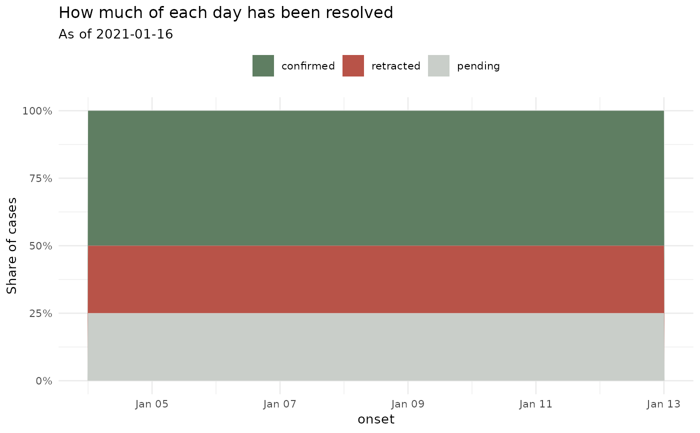

How much of each day has been resolved
plot_validation_status.Rd![[Experimental]](figures/lifecycle-experimental.svg)
The share of each event date's cases that are confirmed, retracted or
still pending, as of the object's now.
This is the picture of the resolution front. The oldest dates are almost entirely resolved; the most recent ones are mostly pending, because the laboratory has not caught up yet. Where that front sits tells you how far back the confirmed counts can be trusted – and a day that is 80% pending is a day whose confirmed count means very little.
Reading it
The pending band widening towards the right is normal and expected – it is
the same right-truncation a nowcast exists to correct, one axis over. What is
not normal is a pending band that stays wide far from the now: those cases
were reported and then never resolved, and they will never be. Consider
censor_validation_delays_above().
A retracted share that changes over time is worth investigating: it usually
means the testing criteria or the case definition changed, not that the
disease did.
Colours
confirmed is drawn in the palette's green (it is a real case – the
epidemic process), retracted in the accent red (it was removed by the
reporting process), and pending in grey (not yet known either way).
Examples
cases <- data.frame(
onset = as.Date("2021-01-04") + rep(0:9, each = 4),
visit = as.Date("2021-01-05") + rep(0:9, each = 4),
result = as.Date("2021-01-07") + rep(0:9, each = 4),
outcome = rep(c("confirmed", "confirmed", "retracted", "pending"), times = 10)
)
cases$result[cases$outcome == "pending"] <- as.Date(NA)
flu <- tbl_now(cases,
event_date = onset, report_date = visit,
validation_date = result, validation_type = outcome,
data_type = "linelist", verbose = FALSE
)
plot_validation_status(flu)
